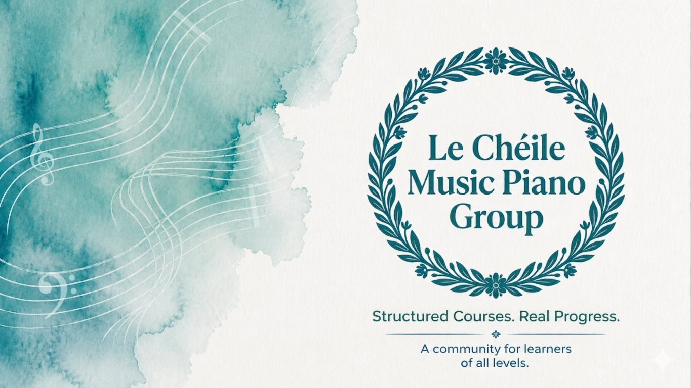
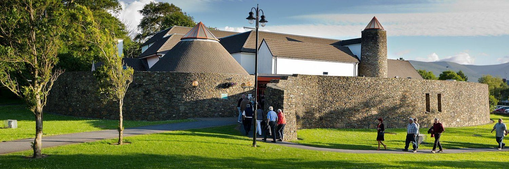
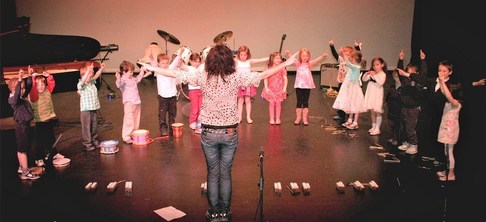
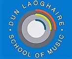
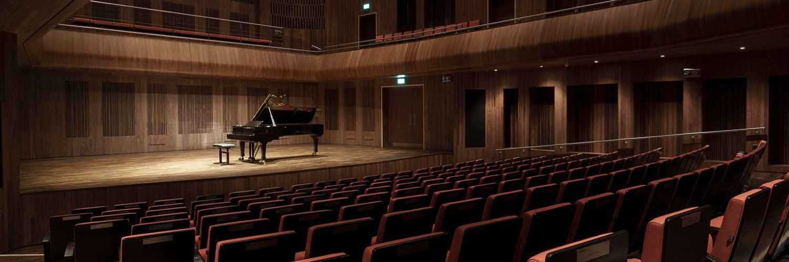
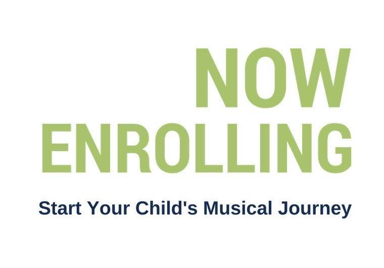
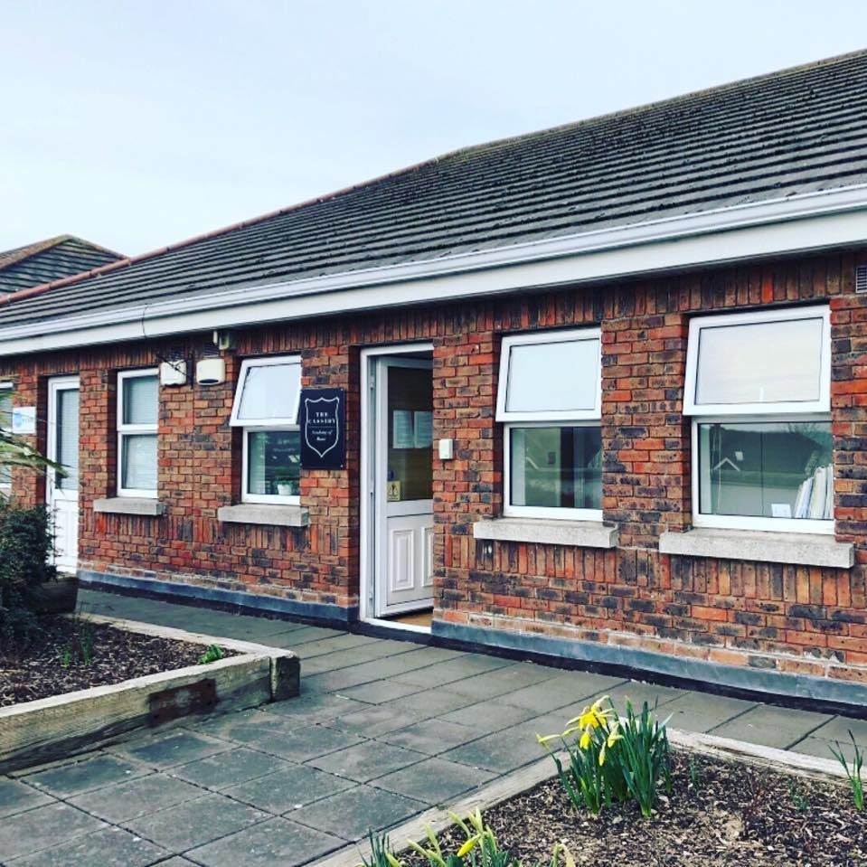

Music Classes in Ireland
Explore 98 Music classes and activities for kids across Ireland. Music classes are most widely available in Dublin, Wicklow, Waterford.


Dublin School of Music
One-to-one instrumental and vocal lessons (piano, guitar, violin, voice, flute, drums) for children and adults of all abilities, taught by concert performers and examiners, with exam preparation available.
View full details →Dublin School of Music
One-to-one instrumental and vocal lessons (piano, guitar, violin, voice, flute, drums) for children and adults of all abilities, taught by concert performers and examiners, with exam preparation available.
View full details →Dublin School of Music
One-to-one instrumental and vocal lessons (piano, guitar, violin, voice, flute, drums) for children and adults of all abilities, taught by concert performers and examiners; this location also offers Sunday lessons.
View full details →

Lucan School of Music
Music school offering individual instrumental lessons for pre-school children through to advanced adult students, with a student-centred teaching approach and optional grade exam preparation.
View full details →

Adult Beginner Piano Class
A relaxed, supportive space where you can take time each week just for you and discover the joy of making music and learning something new with like-minded adults. No experience needed and no age limit. Classes take place in a small group setting in Kilbeggan, Co. Westmeath, personally led by Áine Nolan, PhD, who has over 20 years of teaching experience. Limited availability — email info@ainenolan.com to secure your place.
View full details →

Alize’s School of Singing
Alize’s School of Singing is an award-winning music and performing arts school based in Kilkenny, dedicated to building confidence, creativity, and performance skills in children, teens, and adults. Founded by Alize Comerford, the school offers expert tuition in singing, drama, musical theatre, piano, guitar, ukulele, pop choir, and performance training in a fun, supportive, and encouraging environment.
View full details →
Clontarf Children’s Choir / Pre Instrumental Music
McDermott Music is a vibrant music education programme based in Clontarf, Dublin, offering engaging, high-quality classes for children of all ages. Founded by qualified primary teacher and music educator Lauraine McDermott , McDermott Music provides Kodály-inspired early years music classes, the Clontarf Children’s Choir (ages 7–12) and the Clontarf Youth Choir (ages 12–18). At the heart of McDermott Music is the belief that every child deserves the opportunity to experience the joy of music in a welcoming, supportive environment. There are no auditions- just a focus on building confidence, developing musicianship, creating lasting friendships and fostering a lifelong love of music. Through inspiring performances, exciting collaborations and a strong sense of community, children grow not only as musicians but as confident, creative young people. Sing. Learn. Belong.
View full details →

Eoin’s Guitar Lessons
Guitar and Ukulele lessons based in Borrisokane. Also serving Nenagh, Cloughjordan and Portumna and their surrounds. Online lessons available to anyone anywhere!
View full details →

Grow Music
Cultivating talent in children and adults with 1 to 1 music lessons, ensembles, and professional instruction focusing on performance. Locations in Dundalk and Drogheda, Co. Louth, Ireland.
View full details →

Harmonics Music School
Harmonics Music School offers one-to-one lessons for adults and children in a welcoming, safe and supportive environment. If you're feeling nervous or anxious, the school is there for you every step of the way: all teachers are handpicked, Garda vetted, Tusla certified, and follow a strict child safeguarding policy. Locations in Greystones and Kilcoole.
View full details →

Harmony Music
Harmony Music is a music school in Ballincollig. We have been running lessons in the Carraig Centre since 2020 and have since added lessons in Gaelscoil Uí Ríordain. We offer 1:1 instrumental lessons in piano, cello, voice, guitar, bass guitar, violin and drums as well as group lessons for singing, guitar, Suzuki piano and Music Explorers. We teach adults, teenagers and children aged 4+ of all levels in various music styles. Our focus is to make progress while enjoying the process. We give our students the opportunity to take part in concerts, complete RIAM grade exams, or to take a student centered approach by taking into account the level, style and personal musical interests of the individual student. We believe its important to enjoy music while progressing and keep enjoyment of music in focus during lessons.
View full details →
Le Chéile Music Piano Community
Le Chéile Music is an online community for piano students who want to stay motivated and make steady progress in the company of like minded adults. Run by Leah Murphy MA, a teacher and Music Therapist with 20 years experience, the page offers a free sight reading course and the famous 40 Piece Challenge, along with access (after upgrading) to a library of ground-breaking neuroscience-based courses on all aspects of learning piano, and live group classes for every level from beginners to advanced. See what current members are saying about the community here: https://ie.trustpilot.com/review/lecheilemusic.com
View full details →

Oboe, Piano, Recorder, Ukulele lessons from age 8 to 88
Experienced teacher (ask away!) offering lessons in oboe (all levels), recorder (beginner/intermediate), piano (beginner), and ukulele (beginner/intermediate). Based in Cork City Centre, near the Cork School of Music where I work and study, I teach from my home with a holistic approach for children and adults, focusing on developing a healthy and joyful relationship with music learning. Happy to answer any questions in person or over the phone.
View full details →

Online Piano & Guitar Lessons for Adults and Children – Music Lessons Ireland
Learn piano or guitar from home with a professional musician. Music Lessons Ireland offers fun, engaging 1-to-1 online music lessons for adults and children across Ireland. All lessons are taught live over Zoom by a professional performing musician with over 10 years of teaching experience in Irish primary schools and private tuition. Lessons are tailored to each student's interests, whether that's learning songs, improving confidence, building creativity, or developing a strong musical foundation, covering piano, guitar, and beginner musicianship, all online from anywhere in Ireland. No grades or exams are required - students learn through songs, games, creativity and practical skills that make music enjoyable from the very first lesson. Lessons suit complete beginners, children aged 7+, teenagers, adults returning to music, homeschool students, and anyone looking for a creative outlet. All you need is an instrument, a device with Zoom, and an internet connection. A free trial lesson is available for new students - message Jack directly to check availability or ask any questions.
View full details →

Orchestra For Adults in Cork
Join the orchestra! No audition required, just complete the application form. Whether you are an experienced player looking for an opportunity for regular music making, or have played before and would like to get back to playing, this is for you. The orchestra meets weekly in Douglas to play music from every genre, including Baroque, Classical, Film, Traditional and Pop. Violin, viola, cello and bass players of grade 6 and above, or with equivalent experience, will be comfortable with the pace.
View full details →
Piano Lessons
Piano lessons for all ages and abilities in Harold’s Cross, Dublin. Lessons are tailored to each student’s goals and can include piano performance, music theory, Leaving Certificate Music preparation, and piano exam preparation. Beginners through to advanced students are welcome in a supportive and encouraging learning environment. I have experience working with students with additional needs and strive to make lessons accessible and enjoyable for every learner. If you have any questions about your specific requirements, please feel free to get in touch to discuss how lessons can be adapted to suit your needs. Qualifications: MMus, BMus, LRSM. Lessons are available in person in Harold’s Cross, with online lessons also available where suitable.
View full details →

Professional Music Lessons in Ennis & Online
Professional music lessons in Ennis and online, covering guitar, ukulele, piano/keyboard, and violin/cello, from beginner to intermediate, all ages, with 14+ years of experience. Structured, enjoyable one-on-one lessons tailored to your goals, learning songs you love while building strong technique. Two options are available: in-home tuition in Ennis, or high-quality, flexible online lessons. Offering patient, expert guidance for all ages, personalised lesson plans, and flexible scheduling. Contact to book your first lesson: email keilagandraeng@gmail.com or phone 089 4117150.
View full details →SINGING CLASSES
Singer, songwriter and Estill Master Trainer with twenty-five years of experience, offering group and private classes to every level, from absolute beginners to professionals. Available online or in my home studio in the Lough area, Cork city. I believe in Joe Estill's principle: 'Everyone has a beautiful voice. You just have to learn how to use it!' Embrace a wonderful self-discovery journey through the colours of singing and speaking, with practical and effective solutions to empower the voice and customised paths to expand creativity. Subjects available: singing, voice training for speakers, Estill Voice Training, songwriting, and producing with Ableton Live and voice recording. Prices: 1 hour class, €40; 45 min class, €35; 30 min class, €25. Packages: 4 classes of 1 hour, €160/€150; 4 classes of 45 minutes, €140/€130; 4 classes of 30 minutes, €100/€90. These prices refer to one-to-one classes; for group classes please enquire by email. To book a class or for more information, email chiarastella.singingforall@gmail.com
View full details →
Siamsa Tíre Theatre and Arts Centre
Welcome to Siamsa Tíre, one of Ireland's busiest and most vibrant theatre and arts centres. We provide a diverse and inclusive range of live family entertainment and performances, arts workshops and visual art exhibitions from our beautiful centre in Tralee, Co. Kerry.
View full details →

Singing & Guitar Lessons
Music Mad offers singing and guitar lessons in Cork. We believe music should be fun, creative, and confidence-building, whether you're preparing for exams, polishing your performance skills, or just starting your musical journey, with supportive and professional lessons tailored to you. We offer singing lessons (all ages and levels), guitar lessons (acoustic and electric), exam preparation (Junior/Leaving Cert, RIAM, etc.), and fun, relaxed classes to build confidence and technique. Locations: Marina Commercial Park, Cork City (next to the Marina Market), and SuperValu Glanmire (convenient, free parking available). Rates from €30 per lesson, with term packages available. Whether you're a beginner or advanced, child or adult, we'll help you grow your skills while enjoying the music you love. Get in touch: email caoimhemusicmad@gmail.com or phone/WhatsApp 087 268 1100.
View full details →
Suzuki Violin and Fiddle Classes with Caitriona
Violin/fiddle lessons for children (age 4+) and adults in Ennis and Clarecastle, Co. Clare. Enrolling all year, with instruments available to rent and taster lessons available. Classical and traditional music taught by a qualified primary school teacher with an MA in Music Education, Garda vetted and a member of the Teaching Council of Ireland. Phone: 087-7735193
View full details →

TrueNote – Music Lessons
TrueNote School of Music is a modern, student-focused music school based in Dublin, offering high-quality lessons in a fun, supportive environment. Whether you're a complete beginner or looking to refine your skills, our experienced teachers tailor each lesson to suit your goals and ability. We offer private and group lessons in guitar, bass, ukulele, drums, piano & keyboard, and vocals. Our approach is simple: make learning music enjoyable while delivering real progress. Students build confidence, develop strong technique, and, most importantly, learn to love playing. With small class sizes, flexible scheduling, and a welcoming atmosphere, TrueNote is ideal for kids, teens, and adults alike. We also place a strong emphasis on community, encouraging students to grow together and even form their own groups. Why choose TrueNote? Personalised, goal-focused lessons; experienced and passionate teachers; group classes that make learning social and fun; affordable pricing with high-quality instruction; and a supportive environment where every student can thrive. Join the growing number of students discovering their sound at TrueNote.
View full details →

Bloom Baby Classes Wicklow and South Dublin
Classes suitable from 6 weeks to 14 months, or until baby begins to confidently walk. Venues in Dun Laoghaire, Blackrock, Mount Merrion, Bray, Greystones, Wicklow Town & Arklow. We use catchy music and beautiful bespoke props to support baby's development in all areas. With a strong focus on parent and baby bonding, we encourage lots of eye contact and cuddles throughout class. There is also time for those much-needed mum chats, of course!
View full details →
Encore! School of Performing Arts
Encore Tots is a drama and singing class for children aged 3 to 5 years. The programme of poems, songs, rhymes, movement to music and games is designed to build confidence and performing arts skills. Parents do not attend the 30-minute class. We provide a free t-shirt, and students just wear anything comfy to allow free movement. Our staff are extremely experienced and kind, and children love them.
View full details →Mindful Creativity with Michelle
Children learn to become friends with the emotions that come to visit them, through crafts, music, games and activities, helping them connect with breath and body. Suitable for children aged 7-11 years. Flemington Community Centre, Balbriggan. July 21st-25th, 10:00-12:30. €120. Sibling discount available. Phone Michelle on 0877730177.
View full details →Music 4 Tots
Music 4 Tots offers music and movement classes for preschoolers. Classes also offered in Firhouse Community Centre / Blackrock. Please stay up to date with our locations and times on our social media accounts. All caregivers are welcome and must stay with children.
View full details →

Music Cubs
Parent & child music classes for babies, toddlers and big cubs aged 0 to 5 years. Music Cubs classes are 30 minutes of fun, melody and play, introducing musical rhythms, beats and tempos, and teaching simple percussion to your bear cub. Enjoy live performances on a variety of instruments, and a time to immerse yourselves in music together. Little ones have a natural love of music - grow that love in a gentle, fun way. Classes in various locations across Dublin.
View full details →
Little Folk Music for Babies, Toddlers & Young Children
Little Folk is an early years music class for children aged 3 months to 5 years (or even older) and their adults. Featuring 45 minutes of live music, playing percussive instruments and movement with scarves, a good time is had by all. Classes explore rhythm, tempo and movement, featuring original and traditional children's music. Kyle has been writing and performing children's music for the last 11 years. Mondays, 10am, Oldcastle Masonic Hall, Co. Meath. Tuesdays, 10am & 11am, Mullingar Arts Centre. Wednesdays, 10am & 11am, Kells Family Resource Centre. Fridays, 10am & 11am, The Backyard, Cavan Town.
View full details →

Churchtown School of Music
One-to-one instrumental and vocal lessons across 20+ instruments (piano, guitar, violin, drums, singing and more), taught in dedicated teaching rooms by specialist instructors, with optional exam preparation.
View full details →
Blanch Music
Blanchardstown School of Music was set up to provide music lessons in a variety of musical disciplines. The aim of the school is to provide a fun and vibrant musical education for its students, with a strong emphasis on getting the best from our students.
View full details →

Classical Kids
Designed for the pre-schooler and older child up to 7 or 8, Classical Kids is all about interacting with the music in a totally natural way. Making sounds, moving around, dressing up, and standing completely still with mouth wide open, it’s all good with them! They have play mats, lego, colouring, and musical worksheets for older children.
View full details →Dublin School of Music
The Dublin School of Music offers professional musical instrument tuition in a relaxed, local environment, to students of all ages and levels. Lessons incorporate improvisation, songwriting, audio engineering, music theory, ear training, composition and performance. Grade exam preparation (optional) is available for all instruments.
View full details →

Dun Laoghaire School of Music
The school offers expert tuition in most instruments, theory and voice by experienced and dedicated teachers, providing individual or group classes for all ages and levels. A diverse range of musical styles is on offer, from classical to jazz through to popular and traditional music. They also run The Children's World of Music, a special awareness class for children aged 3-7 years.
View full details →

Early Years Music
At TUD's Early Years Music programme, children learn through active music-making. There are three levels of classes: Kids' Club 1 (for pre-school children), Kids' Club 2 (for children in Junior Infants), and Pre-Instrumental Classes (for children in Senior Infants, 5-7 years old). They also run a Junior Conservatory Curriculum for older kids who want to learn an instrument. Weekly lessons are delivered on a one-to-one or group basis.
View full details →Keenan School of Music
Keenan School of Music, Castleknock, has fully qualified teachers providing expert tuition in flute, piano, guitar, ukulele, voice, recorder, violin, viola, cello, and saxophone. Their emphasis above all is to encourage learning through enjoyment.
View full details →Kilternan School of Music
Kilternan School of Music aims to deliver the best music education possible in a fun, friendly and enthusiastic environment. Parents of students become part of the school and play an important role in the musical development of their children.
View full details →

Leeson Park School of Music
Colourstrings instrumental music classes are a natural progression from the music kindergarten programme. The instrumental tutor books include songs, nursery rhymes and rhythms familiar from the Singing and Rhythm Rascals books which makes learning the technical demands of the instrument much easier for the young child as they are already familiar with the musical content of the material.
View full details →Leeson Park School of Music
Music Kindergarten takes the young child on a wonderful adventure through 'Musicland', where their sense of pitch and rhythm is developed alongside training of the inner ear. All classes introduce different musical concepts such as pitch, rhythm, melody, dynamics, tempo, character, form and style, in a playful way through a carefully chosen selection of well-known rhymes and children's songs. Music Kindergarten classes (1-4 years) take young children on this adventure through 'Musicland' via the Colourstrings approach. The Pre-Instrumental Programme (4-7 years) is the after-school introductory music class, a 2-year programme - these weekly classes allow children to attend on their own, which encourages them to build a relationship with music.
View full details →
Me & You Music
Me & You Music (suitable from 4 months to 6 years) is about playfully introducing the wonderful world of music and encouraging children to sing, dance, explore and, most importantly, have fun. Mischa takes her music classes and workshops all around Dublin.
View full details →

Mini Music Academy
Mini Music Academy, at The Castleknock School of Music, is an exciting, structured and educational music programme for children aged 6 months to 7 years. MMA provides your child with a fantastic opportunity to develop a love and understanding of music through an innovative and proven method of teaching. Classes are fun and educational, providing the foundation for your child's continued musical education - all the songs have been specially composed for the MMA series of classes. Busy Babies is a fun and educational music class for ages 6-24 months. Bonnie Bluebirds is the class for 2-3 years. Red Robins is the class for 3-4 years.
View full details →Music 4 Tots
Music 4 Tots and Baby Sensory Play is a fantastic way to introduce your baby to music and sensory play, which has tons of benefits including increased brain and speech development, enhanced gross and fine motor skills, boosted creativity, social skills and musical skills, not to mention the precious one-on-one bonding time you get with your child in a fun and supportive environment. Why not book a place and come meet other parents, make friends, get loads of ideas for music and sensory play at home, as well as tummy time tips and much more? Music 4 Tots classes run Fridays at Firhouse Community Centre: Levels 1 and 2, Nurtured Newbies and Little Explorers (mixed class, ages 0-12 months), 9.30-10.30am, followed by Music 4 Tots Level 3, Music Makers (ages 13 months to 3 years), 10.30-11.30am. Classes are led by a qualified Kindermusik facilitator.
View full details →

Newpark Music
Newpark Music Centre’s mission is to provide quality music education for children and adults, to strive for excellence while focusing on enjoyment, to train both recreational and professional musicians and to foster a love of music in both.
View full details →

Newpark Music Centre
Early years music education is essential for a child's development, fostering a lifelong love of music through singing, playing instruments, or listening. Newpark Music Centre offers a gentle introduction to music, percussion, storytelling and rhythm for children aged 3 months to 7 years, accompanied by an adult. Classes are 45 minutes each, over 30 weeks, and grouped according to age: Newpark Nippers (3 months-4 years), Gateway to Music (4-6 years), and Gateway to Instruments (5-7 years).
View full details →

Royal Irish Academy of Music
From a young child taking his first musical steps to the seasoned musician seeking expertise and guidance at the highest level, the RIAM’s multi-faceted courses have something to offer all aspiring musicians. The Academy provides a comprehensive musical education from pre-instrumental to postgraduate level and offers numerous courses for both part-time and full-time students.
View full details →

Sharp Kids
Sharp Kids classes are a fun and lively introduction to music, in preparation for the learning of the piano and other musical instruments. Suitable for 3 to 6 year olds, this training will begin to develop beat, rhythm, pitch and aural awareness, laying good foundations for the future.
View full details →

Tempo Music School
Tempo Music School offers music appreciation classes for children and parents together in our Baby Beats and Mini Beats classes. 'Baby Beats' is a fun and interactive music class for young children between 9 months and 3 years of age - our super friendly facilitator will awaken the musicality in children using song and percussion. In the 'Mini Beats' class, kids from 4 to 6 years old experience a wide range of instruments, songs and compositions in a comfortable class setting, while having plenty of fun doing so. Benefits to the children include exercising their sensory motor ability, developing coordination, rhythm, listening and speaking, while promoting interaction between the children, and also between the child and their parent. Music appreciation classes also prepare children for an instrument class in the future, as kids will be introduced to strings, percussion and wind instruments. Class structure: a Welcome Song, a delightful way to start the session and help your child feel comfortable; Nursery Rhymes, singing along to classics that engage your baby's listening and language skills; Sound Exploration, introducing your child to new sounds with percussion instruments; Action Songs, enjoying dynamic and interactive movements with music; and a Goodbye Song, ending the class on a positive note with a fun and soothing farewell.
View full details →

The Cassidy
Private instrumental lessons are provided in Piano, Violin, Cello, Guitar, Singing, Flute, Clarinet, Recorder and Drums, by hugely qualified and experienced teachers.
View full details →

The New School
The New School is a comprehensive music centre, combining expert tuition in the broadest range of instruments and subjects with innovative approaches to music education. Their external activities include an Outreach Programme, providing workshops and longer-term courses for young people and those with special needs; a Music at Work Programme, providing convenient and affordable music courses in Dublin-area workplaces; the Waltons World Masters Series, which has brought to Ireland some of the world's most extraordinary musicians and performing groups; and the Waltons Music for Schools Competition, a national competition and celebration of music in Irish schools.
View full details →The School of Music
Churchtown School of Music has a wide range of classes, suitable for all ages and levels, from beginner to advanced and everything in between! Located in Dundrum, CSM offers to all who attend, regardless of artistic and intellectual ability, the opportunity to pursue their own personal development.
View full details →MACBabies Music Sensory class Killarney
Discover the magic of MACBabies at The MACademy in Killarney. Our parent-and-toddler one-hour musical sensory classes combine music, movement, and sensory play to spark little imaginations, with bonding time, social interaction, and developmental benefits in a fun, engaging environment. Perfect for ages 6 months-3 years, located at The Killarney Racecourse on Ross Road, every Tuesday and Thursday at 10am. Suitable for parents or caregivers - join the fun and let's make music together.
View full details →Ready Steady Play South East
Ready Steady Play and Music classes provide a range of developmentally appropriate activities through play, music and movement for children from newborn to primary school age. Our child development experts and teachers create a unique experience weekly, encouraging early learning and development. In class we pride ourselves on forging a sense of community where parents and caregivers build personal connections and lifelong friendships. Through socialisation, your child will explore and discover the world around them, and our classes are great fun for parents, caregivers and children alike. The activities support your child's 5 key areas of development: social, emotional, cognitive, physical, and language. Our play educators guide you and your child through nurturing activities and exercises to stimulate your little one's brain development, in an inviting environment to meet new parents, share bonding experiences, ask questions and create memories. Every week you'll go on a play and musical adventure where your little one is encouraged to express themselves through play, music, and movement, and overcome new challenges to reach developmental milestones. Our Sensory Baby Play and Music classes are suitable from newborn to pre-walkers, while our Toddler Play and Music classes are suitable for walkers to preschoolers. Classes run weekly in Waterford, Dungarvan, Wexford and Kilkenny. Visit www.ready2play.ie for more information and bookings.
View full details →Bloom Baby Classes Wicklow and South Dublin
Classes suitable from 6 weeks to 14 months, or until baby begins to confidently walk. Venues in Dun Laoghaire, Blackrock, Mount Merrion, Bray, Greystones, Wicklow Town & Arklow. We use catchy music and beautiful bespoke props to support baby's development in all areas. With a strong focus on parent and baby bonding, we encourage lots of eye contact and cuddles throughout class. There is also time for those much-needed mum chats, of course!
View full details →Bloom Baby Classes Wicklow and South Dublin
Classes suitable from 6 weeks to 14 months, or until baby begins to confidently walk. Venues in Dun Laoghaire, Blackrock, Mount Merrion, Bray, Greystones, Wicklow Town & Arklow. We use catchy music and beautiful bespoke props to support baby's development in all areas. With a strong focus on parent and baby bonding, we encourage lots of eye contact and cuddles throughout class. There is also time for those much-needed mum chats, of course!
View full details →Bloom Baby Classes Wicklow and South Dublin
Classes suitable from 6 weeks to 14 months, or until baby begins to confidently walk. Venues in Dun Laoghaire, Blackrock, Mount Merrion, Bray, Greystones, Wicklow Town & Arklow. We use catchy music and beautiful bespoke props to support baby's development in all areas. With a strong focus on parent and baby bonding, we encourage lots of eye contact and cuddles throughout class. There is also time for those much-needed mum chats, of course!
View full details →Bloom Baby Classes Wicklow and South Dublin
Classes suitable from 6 weeks to 14 months, or until baby begins to confidently walk. Venues in Dun Laoghaire, Blackrock, Mount Merrion, Bray, Greystones, Wicklow Town & Arklow. We use catchy music and beautiful bespoke props to support baby's development in all areas. With a strong focus on parent and baby bonding, we encourage lots of eye contact and cuddles throughout class. There is also time for those much-needed mum chats, of course!
View full details →Bloom Baby Classes Wicklow and South Dublin
Classes suitable from 6 weeks to 14 months, or until baby begins to confidently walk. Venues in Dun Laoghaire, Blackrock, Mount Merrion, Bray, Greystones, Wicklow Town & Arklow. We use catchy music and beautiful bespoke props to support baby's development in all areas. With a strong focus on parent and baby bonding, we encourage lots of eye contact and cuddles throughout class. There is also time for those much-needed mum chats, of course!
View full details →Bloom Baby Classes Wicklow and South Dublin
Classes suitable from 6 weeks to 14 months, or until baby begins to confidently walk. Venues in Dun Laoghaire, Blackrock, Mount Merrion, Bray, Greystones, Wicklow Town & Arklow. We use catchy music and beautiful bespoke props to support baby's development in all areas. With a strong focus on parent and baby bonding, we encourage lots of eye contact and cuddles throughout class. There is also time for those much-needed mum chats, of course!
View full details →Music 4 Tots
Music 4 Tots offers music and movement classes for preschoolers. Classes also offered in Firhouse Community Centre / Blackrock. Please stay up to date with our locations and times on our social media accounts. All caregivers are welcome and must stay with children.
View full details →Music Cubs
Parent & child music classes for babies, toddlers and big cubs aged 0 to 5 years. Music Cubs classes are 30 minutes of fun, melody and play, introducing musical rhythms, beats and tempos, and teaching simple percussion to your bear cub. Enjoy live performances on a variety of instruments, and a time to immerse yourselves in music together. Little ones have a natural love of music - grow that love in a gentle, fun way. Classes in various locations across Dublin.
View full details →Music Cubs
Parent & child music classes for babies, toddlers and big cubs aged 0 to 5 years. Music Cubs classes are 30 minutes of fun, melody and play, introducing musical rhythms, beats and tempos, and teaching simple percussion to your bear cub. Enjoy live performances on a variety of instruments, and a time to immerse yourselves in music together. Little ones have a natural love of music - grow that love in a gentle, fun way. Classes in various locations across Dublin.
View full details →Music Cubs
Parent & child music classes for babies, toddlers and big cubs aged 0 to 5 years. Music Cubs classes are 30 minutes of fun, melody and play, introducing musical rhythms, beats and tempos, and teaching simple percussion to your bear cub. Enjoy live performances on a variety of instruments, and a time to immerse yourselves in music together. Little ones have a natural love of music - grow that love in a gentle, fun way. Classes in various locations across Dublin.
View full details →Me & You Music
Me & You Music (suitable from 4 months to 6 years) is about playfully introducing the wonderful world of music and encouraging children to sing, dance, explore and, most importantly, have fun. Mischa takes her music classes and workshops all around Dublin.
View full details →Me & You Music
Me & You Music (suitable from 4 months to 6 years) is about playfully introducing the wonderful world of music and encouraging children to sing, dance, explore and, most importantly, have fun. Mischa takes her music classes and workshops all around Dublin.
View full details →Me & You Music
Me & You Music (suitable from 4 months to 6 years) is about playfully introducing the wonderful world of music and encouraging children to sing, dance, explore and, most importantly, have fun. Mischa takes her music classes and workshops all around Dublin.
View full details →Ready Steady Play South East
Ready Steady Play and Music classes provide a range of developmentally appropriate activities through play, music and movement for children from newborn to primary school age. Our child development experts and teachers create a unique experience weekly, encouraging early learning and development. In class we pride ourselves on forging a sense of community where parents and caregivers build personal connections and lifelong friendships. Through socialisation, your child will explore and discover the world around them, and our classes are great fun for parents, caregivers and children alike. The activities support your child's 5 key areas of development: social, emotional, cognitive, physical, and language. Our play educators guide you and your child through nurturing activities and exercises to stimulate your little one's brain development, in an inviting environment to meet new parents, share bonding experiences, ask questions and create memories. Every week you'll go on a play and musical adventure where your little one is encouraged to express themselves through play, music, and movement, and overcome new challenges to reach developmental milestones. Our Sensory Baby Play and Music classes are suitable from newborn to pre-walkers, while our Toddler Play and Music classes are suitable for walkers to preschoolers. Classes run weekly in Waterford, Dungarvan, Wexford and Kilkenny. Visit www.ready2play.ie for more information and bookings.
View full details →Ready Steady Play South East
Ready Steady Play and Music classes provide a range of developmentally appropriate activities through play, music and movement for children from newborn to primary school age. Our child development experts and teachers create a unique experience weekly, encouraging early learning and development. In class we pride ourselves on forging a sense of community where parents and caregivers build personal connections and lifelong friendships. Through socialisation, your child will explore and discover the world around them, and our classes are great fun for parents, caregivers and children alike. The activities support your child's 5 key areas of development: social, emotional, cognitive, physical, and language. Our play educators guide you and your child through nurturing activities and exercises to stimulate your little one's brain development, in an inviting environment to meet new parents, share bonding experiences, ask questions and create memories. Every week you'll go on a play and musical adventure where your little one is encouraged to express themselves through play, music, and movement, and overcome new challenges to reach developmental milestones. Our Sensory Baby Play and Music classes are suitable from newborn to pre-walkers, while our Toddler Play and Music classes are suitable for walkers to preschoolers. Classes run weekly in Waterford, Dungarvan, Wexford and Kilkenny. Visit www.ready2play.ie for more information and bookings.
View full details →Ready Steady Play South East
Ready Steady Play and Music classes provide a range of developmentally appropriate activities through play, music and movement for children from newborn to primary school age. Our child development experts and teachers create a unique experience weekly, encouraging early learning and development. In class we pride ourselves on forging a sense of community where parents and caregivers build personal connections and lifelong friendships. Through socialisation, your child will explore and discover the world around them, and our classes are great fun for parents, caregivers and children alike. The activities support your child's 5 key areas of development: social, emotional, cognitive, physical, and language. Our play educators guide you and your child through nurturing activities and exercises to stimulate your little one's brain development, in an inviting environment to meet new parents, share bonding experiences, ask questions and create memories. Every week you'll go on a play and musical adventure where your little one is encouraged to express themselves through play, music, and movement, and overcome new challenges to reach developmental milestones. Our Sensory Baby Play and Music classes are suitable from newborn to pre-walkers, while our Toddler Play and Music classes are suitable for walkers to preschoolers. Classes run weekly in Waterford, Dungarvan, Wexford and Kilkenny. Visit www.ready2play.ie for more information and bookings.
View full details →Mini Music
Early years music classes for ages 3 months to 5 years at Churchtown School of Music (Mon/Wed/Fri) and Saturdays at the National Concert Hall.
View full details →Musicologie Junior
Experiential music classes for ages 6 months-5 years, 40-minute sessions blending singing, movement, instruments and read-along books.
View full details →Little Stars Music School (Sarah O'Kennedy)
Group music classes for ages 1-6 (Sept-June), led by Sarah O'Kennedy (ABRSM & Trinity-trained); rhythm, pitch and early notation.
View full details →Dungarvan School of Music and Trad
Instrumental lessons (guitar, tin whistle, bodhrán), Children's Choir (ages 5-8 and 9-17), and Irish dance, in Dungarvan.
View full details →Harmony Children's Choir
Three choir levels for ages 5-17 in Dungarvan: Music FUNdamentals (5+), Crescendo Singers, and Voca Loca (teens); Wednesdays.
View full details →Dundalk School of Music - Pre-instrumental
Pre-instrumental introductory course for ages 4-6, 9-week programme with group activities, movement and rhythm.
View full details →VISUAL Carlow - Little VISUAL
Early years music workshop for ages 18 months-3 years with accompanying adult, Tuesdays 10-11am; €5 per adult+child.
View full details →JR Piano Lessons
One-to-one piano lessons for kids from age five and teenagers, in-studio or home lessons, Balbriggan.
View full details →Mini Maestros - Regional Cultural Centre Letterkenny
6-week early music class for ages 4-6, Tuesdays 3:45pm, €50, run by Donegal Music Education Partnership.
View full details →Sligo Academy of Music - Musical Explorers
Music classes for ages 3-6, Friday and Saturday sessions at Summerhill College; €10/class.
View full details →Celbridge Piano - Keyboard Games
Group piano course for ages 4-7, 30-minute classes of 2-4 students using an audiation-based teaching approach.
View full details →On Your Toes Clonmel - Bunny Hop Music & Movement
Music and movement class for ages 0-4, rhythm/songs/movement, at On Your Toes Clonmel.
View full details →Musical Tots - Maynooth
Structured music classes for ages 3 months-5 years using songs, nursery rhymes, instruments and props.
View full details →Alto School of Music - Arklow Ukulele
After-school ukulele group lessons for Templerainey NS, St. Joseph's, Arklow; Mondays after school.
View full details →Cavan Academy of Music - Early Years
Kindergarten Music (3 months-6 years) and Suzuki Method Violin (4-5) group classes using Kodály/Dalcroze methods.
View full details →Athy Comhaltas - Irish Traditional Music Lessons
Irish trad music lessons (whistle, fiddle, accordion, banjo, pipes), Tuesdays Sept-May at Ardscoil na Trionoide.
View full details →Portmarnock School of Music
Instrumental and theory lessons for children and teens: piano, violin, guitar, flute and more; Garda-vetted teachers.
View full details →Miss Shannon Music (Musikgarten) - Shannon
Musikgarten classes for ages 9 months-8 years: Toddlers, Mixed Ages, Cycle of the Seasons, and Group Piano.
View full details →Ratoath School of Music - Junior Music Classes
Group music for ages 3-6: keyboards, ukulele, percussion, vocals; groundwork for future instrument study.
View full details →Leithinis Donabate Portrane CCÉ
Monday-evening Irish trad music classes (whistle, flute, fiddle, banjo, bodhrán and more) at Donabate Portrane ETNS.
View full details →Bernie Doherty Music - Summer School, Buncrana
Kids music workshops (instrument making, songwriting, ukulele) at The Exchange Inishowen, ages 4-12.
View full details →Scoil Trad Bhuncranncha
Irish trad music lessons in bodhrán and tin-whistle for age 7+, led by Dr Liz Doherty and Jim Woods.
View full details →Music School Rathcoole
Keyboard, guitar, ukulele lessons plus a summer band camp for ages 6+; performance-focused.
View full details →Carrickmacross School of Music
High-standard music tuition for all ages in Carrickmacross, guitar/piano/flute and more.
View full details →Trishas Tunes - Carrickmacross
Music shop and lessons: drum kits, all instruments for class use, rental programme.
View full details →Blessington Music - Kids Instrument Lessons
Harp, bodhrán, tin whistle, guitar and ukulele lessons for kids, plus workshops and camps.
View full details →Manor Kilbride Music School
One-to-one children's instrument lessons across woodwind, brass, strings, piano and voice; non-competitive.
View full details →Nenagh Arts Centre - Kinder Music & Classes
Nenagh Youth Theatre (13-17), Kinder Music (Saturdays) and other family/kids-friendly sessions.
View full details →Éiníní Early Years Music - Clonakilty
Music programme for ages 0-5 and their grown-ups: lullaby workshops, live instruments and musical signing.
View full details →Laois County Council - Tin Whistle Classes, Mountmellick
4-week tin whistle class for ages 7-16 (two age groups), part of Cruinniú na nÓg; free.
View full details →Moo Music Monaghan - Carrickmacross
Early-childhood music and movement classes for newborns to 5-year-olds, 125 original songs.
View full details →